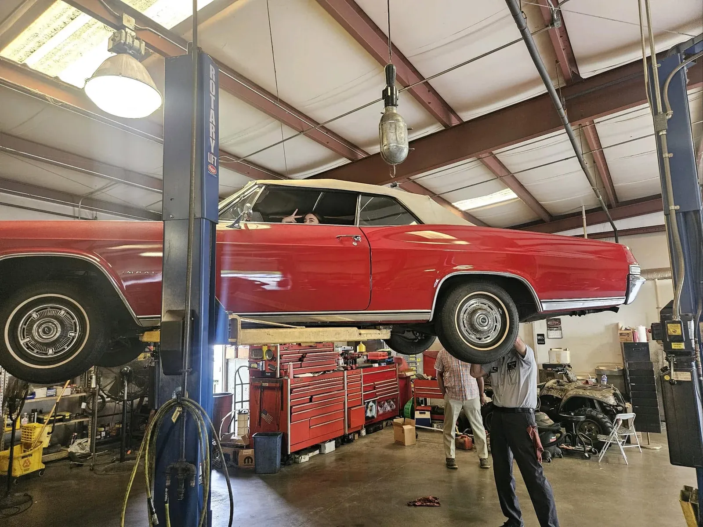
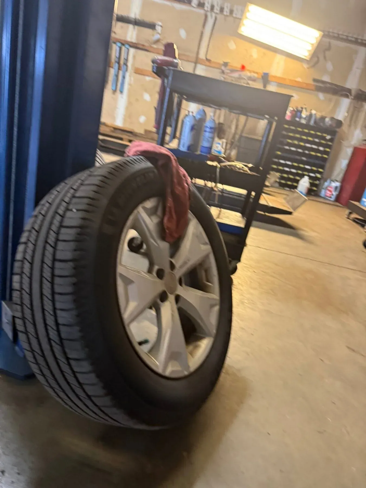
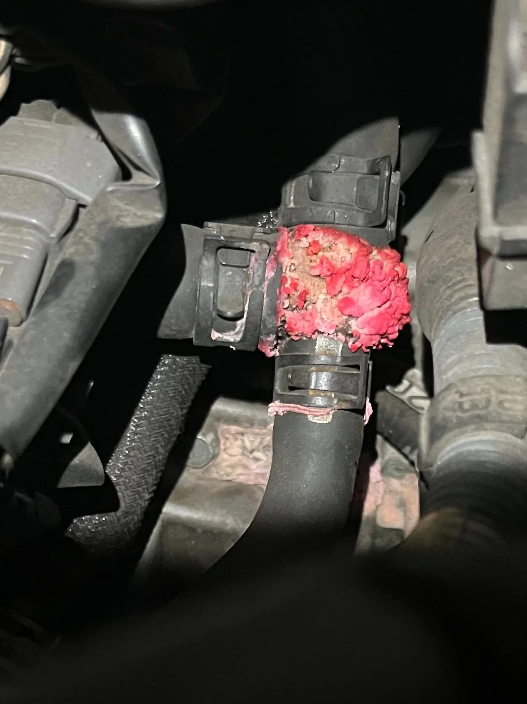
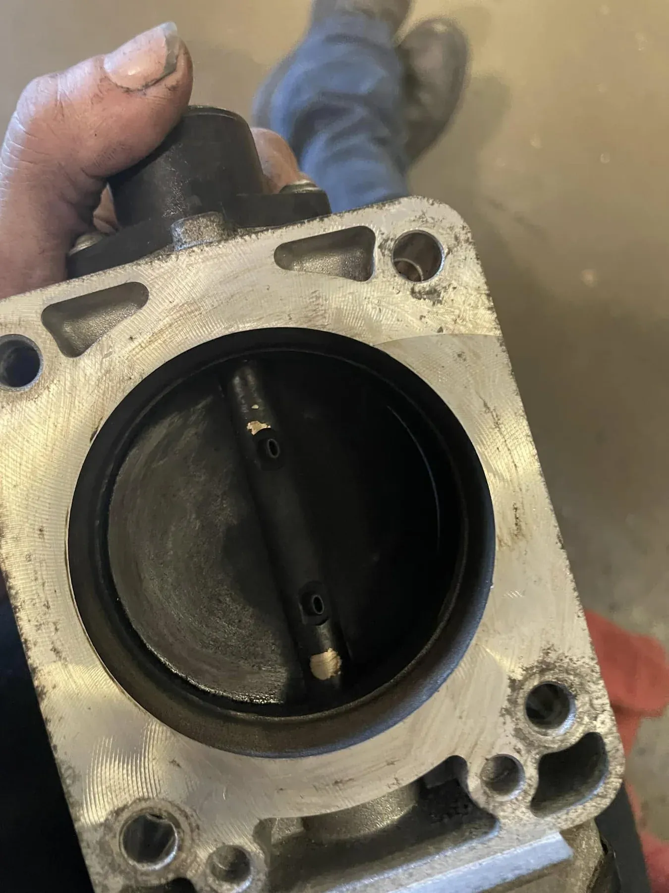
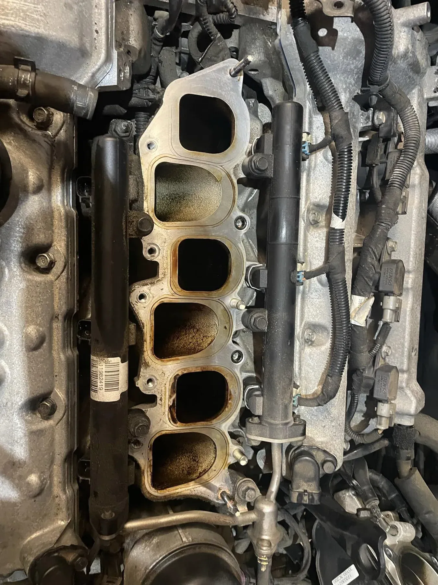
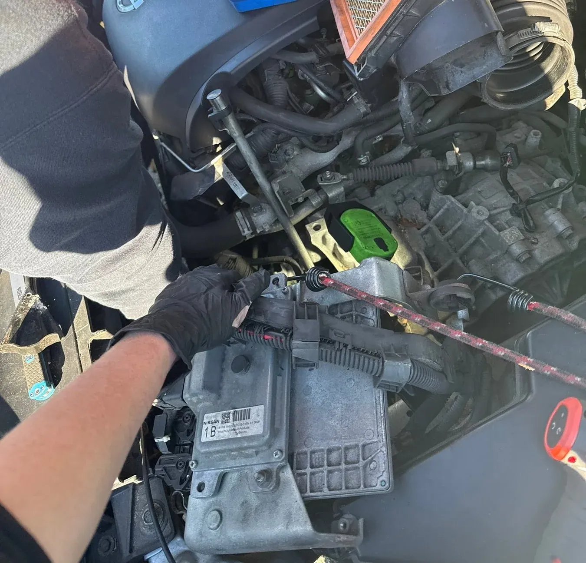

Family owned & operated · Richmond, VA 23236
Honest, family-run auto repair in Richmond
Sixty Service, Inc. has kept Richmond drivers on the road for over two decades. Diagnostics, alignments, brakes, maintenance and Virginia State Inspections, done by a family shop that explains the work in plain English.

-
4.9Google rating From 72 reviews · Read on Google (opens in a new tab)
-
5.0SureCritic rating From 170 reviews · Read on SureCritic (opens in a new tab)
-
2023Nextdoor Neighborhood Fave Voted by neighbors on Nextdoor
-
2007On file with the BBB since Serving Richmond for over two decades
What we work on
Services, written up like a work order
From a glowing check-engine light to your annual Virginia inspection, here is what comes through the bays on Research Court.
- Service ticketNo. 01
Diagnostics & Check-Engine Light
Warning light on? The codes are only the starting point. The job is finding the actual cause, so the fix is the right one.
Signs you need itCheck-engine light, rough running, a new noise or smell.
- Service ticketNo. 02
Wheel Alignment
Precision alignment on the shop's Hofmann alignment system, bringing your wheels back to specification.
Signs you need itPulling to one side, crooked steering wheel, uneven tire wear.
- Service ticketNo. 03
Brakes
Inspection and repair of pads, rotors, calipers and the rest of the system that stops your car.
Signs you need itSquealing or grinding, a soft pedal, vibration when stopping.
- Service ticketNo. 04
Maintenance & Oil Service
Oil service and scheduled maintenance that keep small issues from turning into big repairs.
Signs you need itOil-change reminder, a mileage milestone, overdue service.
- Service ticketNo. 05
Virginia State Inspection
The annual Virginia safety inspection: brakes, lights, steering, tires and the rest of the state checklist.
Signs you need itSticker about to expire, or a car you just bought.
- Service ticketNo. 06
Tire Rotation
Moving tires front to back so they wear evenly, grip consistently and last longer.
Signs you need itTread wearing unevenly, or it has been a while since the last one.
- Service ticketNo. 07
Engine & Throttle-Body Repair
Carbon-choked throttle bodies, intake work and the engine repairs behind a rough idle.
Signs you need itRough or surging idle, hesitation, stalling.
- Service ticketNo. 08
General Repair
Leaks, cooling-system trouble, electrical faults and the everyday repairs in between.
Signs you need itSpots under the car, running hot, anything that feels off.


Why Richmond drivers come back
A family shop, not a franchise
Sixty Service is family owned and operated. The same care goes into a quick oil service as a hard-to-find electrical fault.
Family owned and operated
An independent, family-owned local shop, not a chain. It has earned its reputation one neighbor and one car at a time.
Over two decades in Richmond
Sixty Service has been fixing cars in the 23236 area for more than twenty years, and has been on file with the Better Business Bureau since 2007.
Repairs explained in plain English
You should understand what your car needs and why. Ask questions, ask to see the worn part. A good shop is glad to walk you through it.
The right equipment
Diagnostic tools for modern engine and electrical faults, lifts for every bay, and a Hofmann alignment system for precise wheel alignments.
From the shop log
What we find under the hood
Real photos from recent jobs at Sixty Service. Most car trouble starts small, and a careful look catches it early.




What neighbors say
An honest family run business
Title of a customer review on SureCritic (opens in a new tab), where Sixty Service holds a 5.0 rating from 170 reviews.
What comes up again and again
- HonestyReviewers keep returning to the word honest.
- Family-run feelCustomers notice they are dealing with a family business, not a chain.
- Reliable repairsWork that is done right, so the car leaves fixed.
- Personal attentionReal people who take the time to look after you and your car.
Quick facts
Everything you need, at a glance
Sixty Service, Inc. is a family owned and operated auto repair shop at 11013 Research Ct in Richmond, VA 23236, open weekdays 7:30 AM to 5:30 PM.
- Business
- Sixty Service, Inc. — family owned and operated auto repair
- Address
- 11013 Research Ct, Richmond, VA 23236 (North Chesterfield area) · Directions (opens in a new tab)
- Phone
- (804) 379-9240 · call or text
- Hours
- Monday – Friday7:30 AM – 5:30 PM
- SaturdayClosed
- SundayClosed
- Services
- Diagnostics & check-engine light, wheel alignment, brakes, maintenance & oil service, Virginia State Inspection, tire rotation, engine & throttle-body repair, general repair
- Pricing
- Quoted per vehicle. Every car and repair is different, so call with your year, make and model to talk it through.
- How to book
- Call (804) 379-9240 during shop hours, or request an appointment online.
- Ratings
- 4.9 on Google (72 reviews) · 5.0 on SureCritic (170 reviews) · Nextdoor Neighborhood Fave 2023
Where is Sixty Service located?
Sixty Service, Inc. is at 11013 Research Ct, Richmond, VA 23236, in the North Chesterfield area of Richmond. Get directions (opens in a new tab).
What are your hours?
The shop is open Monday through Friday, 7:30 AM to 5:30 PM, and closed Saturday and Sunday.
Are you open on Saturdays?
No. Sixty Service is closed on weekends. Call (804) 379-9240 during weekday hours, or send an appointment request online anytime.
Do you do Virginia State Inspections?
Yes, Virginia State Inspections are part of the shop's services. Call (804) 379-9240 to check availability for the day you want to come in.
Do you do wheel alignments?
Yes. Alignments are done on a Hofmann alignment system, which measures each wheel and guides the adjustments back to your vehicle's specifications.
How much will my repair cost?
It depends on the vehicle and what it needs, so there is no one-size price list. Call (804) 379-9240 with your year, make and model, or describe the problem in an appointment request.
Do I need an appointment?
Calling ahead is the best way to get your car in. Call (804) 379-9240 or request an appointment online with your preferred drop-off date.
Is Sixty Service family owned?
Yes. Sixty Service, Inc. is a family owned and operated auto repair shop that has been serving Richmond drivers for over two decades.
Sixty Service, Inc.
Car acting up? Talk to a person.
(804) 379-9240Call during shop hours, Monday through Friday, 7:30 AM to 5:30 PM. Or send a request anytime and the shop will get back to you.